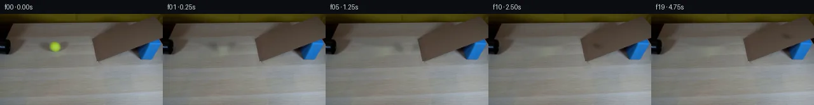

![首帧]()

Round 00
2026-11-05T09:04:29.614721+00:00像素候选变化代码 +229/−0inspection 更新
pixels 55bdd89be1d8884c · code 21a69a29a2e34099
查看本轮 generate.py 真实 diff
--- previous/generate.py
+++ current/generate.py
@@ -0,0 +1,229 @@
+"""PixelWorld case_0020: yellow tennis ball rolls out of a black pipe and climbs a cardboard ramp.
+
+Pure local pixel operations:
+ * ball/sprite and shadow extracted from first_frame.png (chroma key + luminance ratio)
+ * object/shadow removed from the static plate via OpenCV Telea inpainting
+ * analytic piecewise kinematics (table -> rounded kink -> decelerating incline)
+ * alpha compositing with 3-tap motion blur, multiplicative shadow fields
+Frame 00 is byte-identical to first_frame.png.
+"""
+from pathlib import Path
+import numpy as np
+import cv2
+from PIL import Image
+import artifact_io
+
+HERE = Path(__file__).parent
+FR = np.array(Image.open(HERE / "first_frame.png").convert("RGB"))
+H, W, _ = FR.shape
+
+# ---------------------------------------------------------------- geometry ---
+# ramp top-face quad: (low back, low front, high front, high back)
+RAMP_POLY = np.array([[148, 42], [155, 73], [255, 40], [250, 4]], np.int32)
+BLOCK_POLY = np.array([[213, 44], [227, 40], [253, 41], [254, 69], [225, 73], [214, 71]], np.int32)
+PIPE_POLY = np.array([[-2, 34], [17, 36], [18, 63], [-2, 64]], np.int32)
+
+SLOPE_D = np.array([0.945, -0.329]) # travel direction on incline (image)
+SURF_OFFSET = np.array([-2.5, -6.5]) # ball centre vs contact point (r=7)
+
+# per-frame centre positions / scale / phase (see OBSERVATION.md)
+# table: (87,52)+u*(1,.025); kink quadratic; incline decel 0.5 px/frame^2
+POS = [
+ (87.0, 52.0), (95.5, 52.2), (104.0, 52.4), (112.5, 52.6),
+ (121.0, 52.9), (129.5, 53.1), (138.0, 53.3), (146.2, 53.1),
+ (153.7, 49.6), (161.2, 46.9), (168.2, 44.5), (174.8, 42.2),
+ (181.0, 40.0), (186.7, 38.1), (191.8, 36.3), (196.6, 34.6),
+ (200.8, 33.1), (204.6, 31.8), (207.9, 30.7), (210.7, 29.7),
+]
+SCALE = [1.00, 1.00, 1.00, 1.00, 1.00, 1.00, 1.00, 0.99,
+ 0.98, 0.96, 0.94, 0.92, 0.90, 0.89, 0.88, 0.87,
+ 0.87, 0.87, 0.87, 0.87]
+# velocity estimate per frame (px/frame) for motion blur direction/length
+VEL = [8.5, 8.5, 8.5, 8.5, 8.5, 8.5, 8.5, 8.0,
+ 8.2, 7.7, 7.2, 6.7, 6.2, 5.7, 5.2, 4.7,
+ 4.2, 3.7, 3.2, 2.7]
+
+# ------------------------------------------------------- asset extraction ----
+def build_assets():
+ f = FR.astype(np.float32) / 255.0
+ R, G, B = f[..., 0], f[..., 1], f[..., 2]
+
+ # --- ball alpha from yellow-green chroma, spatially localised, smoothed ---
+ chroma = (R + G) / 2 - B
+ alpha = np.clip((chroma - 0.10) / 0.16, 0, 1)
+ yy, xx = np.mgrid[0:H, 0:W]
+ alpha *= np.clip(1 - np.maximum(np.abs(xx - 87) / 15, np.abs(yy - 52) / 11), 0, 1) ** 0.5
+ alpha = cv2.GaussianBlur(alpha, (0, 0), 0.6)
+
+ # --- plate: inpaint ball + whole elongated shadow band ---
+ m = np.zeros((H, W), np.uint8)
+ band = np.array([[54, 44], [72, 41], [118, 42], [121, 49],
+ [117, 58], [95, 62], [70, 61], [56, 57]], np.int32)
+ cv2.fillPoly(m, [band], 255)
+ cv2.ellipse(m, (87, 52), (15, 11), 0, 0, 360, 255, -1)
+ m[:15, :] = 0
+ plate = cv2.inpaint(FR, m, 5, cv2.INPAINT_TELEA).astype(np.float32) / 255
+
+ # --- table shadow field: smoothed luminance deficit around the ball ---
+ lum_f = f @ np.array([0.299, 0.587, 0.114])
+ lum_p = plate @ np.array([0.299, 0.587, 0.114])
+ trust = np.zeros((H, W), np.float32)
+ cv2.ellipse(trust, (80, 52), (26, 11), 0, 0, 360, 1, -1)
+ cv2.ellipse(trust, (104, 51), (17, 9), 0, 0, 360, 1, -1)
+ dark = np.clip((lum_p - lum_f) / np.clip(lum_p, 1e-3, 1), 0, 0.6)
+ dark *= trust * (alpha < 0.3)
+ shadow = cv2.GaussianBlur(dark, (0, 0), 3.0)
+
+ # --- un-premultiplied ball foreground over its (plate+shadow) background ---
+ bg0 = plate * (1 - shadow[..., None])
+ a3 = alpha[..., None]
+ fg = np.clip((f - (1 - a3) * bg0) / np.clip(a3, 1e-3, 1), 0, 1)
+ fg[alpha < 0.12] = 0
+ return plate, shadow, fg, alpha
+
+
+# ------------------------------------------------------------- mask layer ----
+def poly_mask(poly, erode=0):
+ m = np.zeros((H, W), np.uint8)
… diff truncated; 142 more lines …